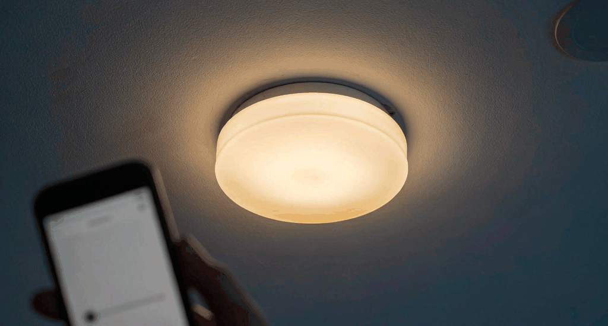
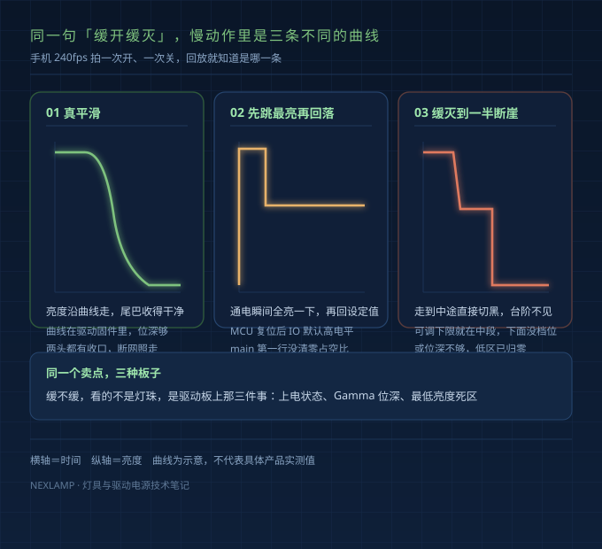
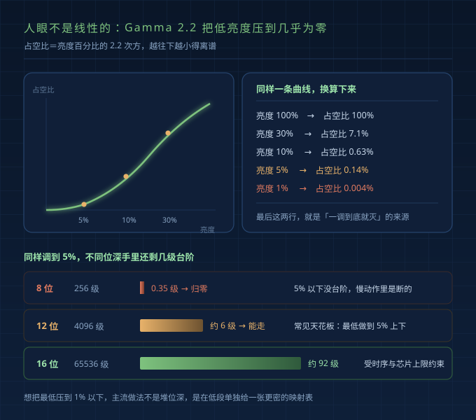
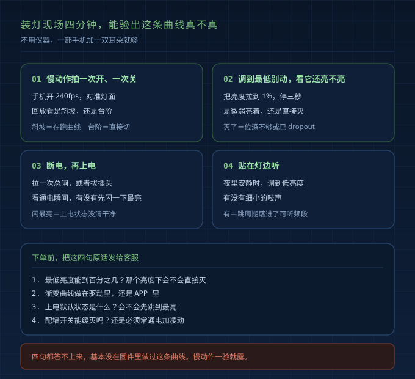

十月的一个下午，一个做装修的老客户把手机递到我面前。慢动作里，筒灯关灯，亮度往下走了一半，一下全黑。
他拖回进度条一帧帧看：业主拍的，问这算不算缓灭。我拿示波器也对了，关断那下电流是台阶下来的，不是斜坡。
视频是从微博转来的。买家自己测，开机先跳到最亮再回落，关机降到一半切断。客服回了句"那是正常的"。
不正常。上电状态和调光曲线，两处都没收拾干净。
先把三种表现分开
同一条宣传语，市面上至少三种东西。
| 表现 | 慢动作里看到的样子 | 根子在哪 |
|---|---|---|
| 真平滑 | 亮度沿曲线走，尾巴收得干净 | 曲线在驱动固件里，位深够，两头有收口 |
| 开机跳最亮再回落 | 通电瞬间全亮一下，再回设定亮度 | MCU 复位后 IO 默认电平没清 |
| 缓灭到一半断崖 | 走到中途直接切黑 | 可调下限就在中段，下面没档位了 |
10 月的汇总里，两家都写着缓开缓灭，几十条回复说的却是同一个毛病。宣传语一样，板子不一样。

上电那一下，是固件第一行的事
我自己复现过。断电再上电，示波器夹在 MCU 输出脚：复位之后、程序跑起来之前，那一路是高电平，灯珠就是被这一下点亮的。
固件里 main 第一件事要不是清零占空比，而是先初始化定时器、再配 IO，中间那段就是全亮。用户看到开机闪最亮，工程师看到的是执行顺序。
位深不够，低亮度就没有台阶
人眼感知亮度和占空比不是线性关系，差一个 2.2 次方，所以要查 Gamma 表，γ=2.2 是通用起点。
按这条曲线算：亮度 30%，占空比 7.1%；10%，0.63%；5%，0.14%；1%，不到万分之四。
问题就出在最后这几位小数。8 位 PWM 一共 256 级，0.63% 落上去只剩一级半，1% 落上去是零级——数学上归零，物理上就是灭。
| PWM 位深 | 总级数 | 纯 Gamma 曲线能走到 | 慢动作里的表现 |
|---|---|---|---|
| 8 位 | 256 | 约 10% 上下 | 再往下没台阶，一调就灭 |
| 12 位 | 4096 | 约 5% 上下 | 低段能走，尾巴基本顺 |
| 12 位加低区分段映射 | 4096 | 1% 左右 | 主流做法，低段单独加密 |
| 16 位 | 65536 | 更低 | 受时序和芯片上限约束 |

所以"最低只到 5%"不是偷懒，是纯 Gamma 加 12 位的天花板。要压到 1%，得在低段另给一张更密的映射表；不做分段，就只能卡个下限，把下面整段切掉。
这也分出了两种毛病。越接近全黑越跳、最后一下灭掉，是位深不够。走到中途就断，是下限不够——两档调光、或者调光加继电器混合，走到一半没档位了，只能硬切。
死区和最小电流，是两头的收口
3%～5% 的占空比和彻底熄灭，人眼几乎分不出，却让尾巴黏着。成熟做法是设死区：低于 3% 直接输出 0，两头才干净。
另一头是最小调光电流，常见在额定的 3% 左右，350mA 的驱动就是 10mA 上下。太低，色偏闪烁都来，CCR 模拟调光 10% 以下容易 CCT 漂移，同批灯珠甚至不同时点亮；太高，就成了"关不掉，最低档还亮着"。
缓灭比缓启难，因为灯得活着
缓启发生在通电那一刻，天然有机会。缓灭不同——关灯指令到达时，灯还得活着，驱动还得在跑曲线。
墙开关一断，电都没了。要缓灭，就得让灯常通电待机，开关只发信号：凌动、智能开关、语音、自动化。这是接线逻辑，不是品牌。8 月底那条求助帖，几十条评论都在查接线。
曲线还得做对地方。APP 或云端下发的逐帧指令，网络一抖就断在半路；写进固件里的斜坡，断网照走。商用标准驱动更常见：标称调到 5% 就 dropout。我们做驱动电源的，宁可把斜坡写死在固件里。
现场怎么验，四个动作
- 手机开 240fps 慢动作，拍一次开、一次关，回放看是斜坡还是台阶。
- 调到 1% 别动，看是暗着还是直接灭。灭了就是位深不够或 dropout。
- 断电再上电，看有没有闪一下最亮。
- 贴耳听。安静房间里，低亮度档有没有吱声。
买之前问四句话
- 最低亮度能到百分之几，那个亮度下会不会直接灭？
- 渐变曲线做在驱动里还是 APP 里？
- 上电默认状态是什么，会不会先跳到最亮？
- 配墙开关还是凌动、智能开关，墙开关能缓灭吗？
四句都答不上来，基本没做过。

已经装完了，三条路
换控制方式最轻：加凌动或智能开关，灯常通电只发信号。代价是动接线，老房子单火还得确认。
换驱动居中：留着灯具换一块驱动，曲线在固件里、位深够。代价是对参数，电流、电压、协议都要匹配。
换灯最彻底，开孔、色温、整批替换都跑不掉。
FAQ
缓开缓灭是灯珠决定的吗？
不是。灯珠只管发光，亮度怎么走由驱动板和控制通道决定。同一颗灯珠配不同驱动，可以是斜坡，也可以断崖。
为什么关灯时先变暗，再突然黑？
两个原因：位深不够，低区没可用步进；或者驱动下限就在那儿，再往下就 dropout。前者是曲线问题，后者是硬件范围。
智能灯一定要常通电才能缓灭吗？
要。关灯指令到达时驱动还得工作，墙开关一断电就没机会跑曲线。开关只发信号，或者走语音和自动化。